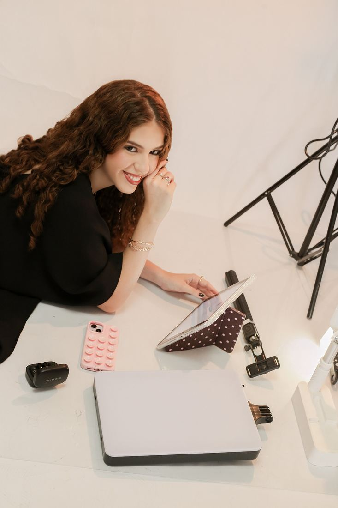

O que proponho
Todos os serviços podem ser contratados de maneira individual ou combinados em uma estratégia completa de conteúdo.
- Bastidores
- Eventos pré-casamento
- Casamentos
- Aniversários
- Eventos corporativos
- Inaugurações
- Entre outros
- Campanhas
- Lançamentos
- Captação de conteúdos para marcas
- Captação de conteúdos para pessoas
- Captação de conteúdos para profissionais
- 1Mantém seu perfil ativo e profissional.
- 2Analisa o que está funcionando no seu perfil e o que não está.
- 3Cria conteúdo que atrai seu cliente ideal.
- 4Faz seu negócio aparecer no digital.
Quer ter tudo isso funcionando no seu negócio?
Não realizo gestão de tráfego pago.


Formas de pagamento
Cartão
Dinheiro
Pix